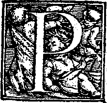
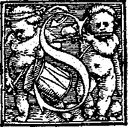

<!DOCTYPE html>
<html lang="en">
<head>
	<meta charset="utf-8">
	<title>Contract Drafting 101: Chapter II</title>
	<meta name="viewport" content="width=device-width, initial-scale=1.0">
	
	<link rel="stylesheet" type="text/css" href="css/bootstrap.min.css">
	<!--<link rel="stylesheet" href="css/normalize.css" type="text/css" />-->
	<!--<link rel="stylesheet" href="css/foldy.css" type="text/css" />-->
	<link rel="stylesheet" href="css/stylesheet.css" type="text/css" />
	<link rel="stylesheet" type="text/css" href="css/bootstrap-responsive.min.css">
	<link rel="stylesheet" href="css/typography.css" type="text/css" />
	
	<!--[if lt IE 9]>
<<<<<<< HEAD
	<script src="http://html5shim.googlecode.com/svn/trunk/html5.js"></script>
=======
	<script src="js/html5.js"></script>
>>>>>>> master
	<![endif]-->
	<style>
	</style>
	
</head>
<body class="container">


<header>
	<h1>Contract Drafting 101</h1>

</header>


<h1 id="beberapaaspekmengenaiperjanjian"><span class="chaptertext">Chapter II :</span><br />Beberapa aspek mengenai perjanjian</h1>

<<<<<<< HEAD
=======
<div class="row-fluid">

		<div class="toc-container">
		<h2><span class="toc-title">Table of Content</span></h2>
		<div class="toc"></div>
		</div>
	
</div>

<hr />


>>>>>>> master
<article>

<section>
<h2 id="asas-asasdalamperjanjian" class="subtitle">Asas-Asas dalam Perjanjian</h2>

<p>erjanjian merupakan salah satu sumber perikatan. Ketentuan Pasal 1313 Kitab Undang-Undang Hukum Perdata (KUHPerdata) memberikan definisi perjanjian sebagai berikut :</p>

<blockquote>
<p>“Suatu perjanjian adalah suatu perbuatan dengan mana satu orang atau lebih mengikatkan dirinya terhadap satu orang lain atau lebih.”</p>
</blockquote>

<p>Perjanjian adalah suatu peristiwa dimana seseorang berjanji kepada orang lain atau di mana dua orang itu saling berjanji untuk melaksanakan suatu hal.</p>
<p>Terdapat beberapa asas yang melandasi pelaksanaan suatu perjanjian. Beberapa asas tersebut antara lain :</p>

<h3 id="asaskebebasanberkontrak">1. Asas Kebebasan Berkontrak,</h3>

<p>Asas kebebasan berkontrak dapat dilihat dalam pasal 1338 KUHPerdata yang berbunyi </p>

<blockquote>
<p>&quot;Semua perjanjian yang dibuat secara sah berlaku sebagai undang-undang bagi mereka yang membuatnya”. </p>
</blockquote>

<p>Asas kebebasan berkontrak adalah suatu asas yang memberikan kebebasan kepada para pihak untuk membuat atau tidak suatu perjanjian, mengadakan perjanjian dengan siapa pun, Menentukan isi perjanjian, bagaimana pelaksanaannya dan persyaratan-persyaratannya serta menentukan bentuknya perjanjian apakah tertulis atau lisan. <a href="#fn:1" id="fnref:1" title="see footnote" class="footnote">[1]</a>
Kebebasan berkontrak bukan berarti boleh membuat perjanjian secara bebas, melainkan harus memenuhi syarat-syarat tertentu untuk sahnya suatu perjanjian. Menurt Riduan Syaharani, maksud kebebasan berkontrak adalah bebas untuk menentukan isi dan macamnya perjanjian sepanjang tidak bertentangan dengan kesusilaan dan ketertiban umum (Pasal 1338 dan 1337 KUHPerdata). Dengan kata lain, para pihak membuat perjanjian tersebut dalam keadaan bebas, tetapi bebas dalam arti selalu berada dalam ruang gerak yang dibenarkan atau sesuai dengan ketentuan hukum yang berlaku. <a href="#fn:1" rel="tooltip" title="Riduan Syahrani. Op.Cit. hlm 205" class="footnote"> 2 </a> </p>

<h3 id="asaskonsensualismeconsensualisme">2. Asas Konsensualisme (<em>Consensualisme</em>)</h3>

<p>Perjanjian terbentuk karena adanya perjumpaan kehendak dari pihak-pihak. Perjanjian pada pokoknya dapat dibuat bebas tidak terikat bentuk dan tercapai tidak secara formil, tetapi cukup melalui konsensus belaka.<a href="#fn:3" id="fnref:3" title="see footnote" class="footnote">[3]</a>
Menurut asas konsensualisme, suatu perjanjian sudah terbentuk dengan adanya kesepakatan dari para pihak yang membuatnya. Kemudian agar perjanjian itu sah adanya maka harus memenuhi syarat-syarat dalam pasal 1320 KUHPerdata. Namun, asas tersebut tidak cukup untuk perjanjian formil karena masih ada formalitas lain yang diatur dalam undang-undang yang harus dipatuhi. </p>

<h3 id="asaskekuatanmengikatverbindendekrachtderoverrnkomst">3. Asas Kekuatan Mengikat (<em>Verbindende kracht der overrnkomst</em>)</h3>

<p>Para pihak harus memenuhi apa yang telah mereka sepakati dalam perjanjian yang telah mereka buat. Dengan kata lain, asas ini melandasai pernyataan bahwa suatu perjanjian akan mengakibatkan suatu kewajiban hukum dan karena itu para pihak terkait untuk melaksanakan kesepakatan kontraktual. <a href="#fn:4" id="fnref:4" title="see footnote" class="footnote">[4]</a>
Para pihak terikat pada apa yang diperjanjikan, dan juga terhadap beberapa unsur lain sepanjang dikehendaki oleh kebiasaan dan kepatuhan, dan kebiasaan akan mengikat para pihak. <a href="#fn:5" id="fnref:5" title="see footnote" class="footnote">[5]</a></p>
</section>
<hr />

<section>
<h2 class="subtitle "id="syaratsahnyasuatuperjanjian">Syarat sahnya suatu perjanjian</h2>
<p>uatu perjanjian dapat dikatakan sah dan memiliki daya mengikat apabila memenuhi beberapa persyaratan. Adapun syarat sah-nya suatu perjanjian sebagaimana diatur dalam pasal 1320 KUHPerdata antara lain : 1) Sepakat, 2) cakap
	3) Objeknya tertentu, dan 4) Kausa yang halal </p>


<h3 id="sepakat">1. Sepakat</h3>

<p>Syarat perjanjian yang pertama adalah sepakat. Sepakat dapat diartikan para pihak benar-benar memiliki kemauan sendiri / kehendak sendiri secara sukarela tanpa ada paksaan, kekeliruan atau penipuan untuk mengikatkan dirinya dengan pihak lain dalam suatu perjanjian. </p>

<h3 id="cakap">2. Cakap</h3>

<p>Cakap dapat diartikan telah dewasa (cukup umur), tidak berada di bawah pengampuan dan telah menikah. Dalam peraturan perundang-undangan terdapat beberapa perbedaan mengenai kriteria dewasa. Perbedaan tersebut antara lain :</p>

<table class="table table-bordered">
<colgroup>
<col style="text-align:left;"/>
<col style="text-align:left;"/>
</colgroup>

<thead>
<tr>
	<th style="text-align:center;">Ketentuan UU</th>
	<th style="text-align:center;">Kriteria Dewasa</th>
</tr>
</thead>

<tbody>
<tr>
	<td style="text-align:left;">Pasal 330 KUHPerdata</td>
	<td style="text-align:left;">Sudah berusia 21 Tahun atau telah menikah</td>
</tr>
<tr>
	<td style="text-align:left;">Pasal 7 ayat (1) Undang-Undang Nomor 1 Tahun 1974 Tentang Perkawinan</td>
	<td style="text-align:left;">ketentuan syarat minimal untuk menikah untuk perempuan berusia 16 tahun dan pria 19 tahun</td>
</tr>
<tr>
	<td style="text-align:left;">Pasal 39 ayat 1 Undang-undang Nomor 30 Tahun 2004 Tentang Jabatan Notaris</td>
	<td style="text-align:left;">penghadap harus memenuhi syarat minimal umur 18 tahun atau telah menikah</td>
</tr>
</tbody>
</table>

<p>Kecakapan seseorang sangat berkaitan dengan umur, seseorang yang telah dewasa dapat mempertanggungjawabkan perbuatan yang telah dilakukannya, baik kepada dirinya sendiri maupun kepada orang lain.</p>

<p>Selain karena faktor usia, seseorang yang dianggap cakap adalah orang yang sehat akal pikirannya dan tidak berada dibawah pengampuan. Pasal 330 angka 2 KUHPerdata tentang siapa saja yang dimaksud orang yang dibawah pengampuan diterangkan dengan jelas oleh pasal 433 KUHPerdata, yaitu terdapat 4 kriteria antara lain : orang yang dungu, orang gila, orang yang mata gelap dan orang yang boros.</p>

<p>Debitor yang telah diputus pailit oleh pengadilan niaga dianggap tidak cakap untuk melakukan suatu perjanjian. </p>

<h3 id="suatuhaltertentu">3. Suatu hal tertentu</h3>

<p>Suatu hal tertentu dapat diartikan bahwa objek perjanjian harus tertentu atau yang menjadi objek perjanjian adalah barang/jasa yang dapat diperdagangkan, dapat ditentukan jenisnya, dapat dinilai dengan uang dan mungkin untuk dilaksanakan.</p>

<h3 id="kausayanghalal">4. Kausa yang halal</h3>

<p>Kausa yang halal memiliki makna bahwa isi dan tujuan perjanjian, bukanlah hal-hal yang bertentangan dengan ketentuan hukum yang berlaku, ketertiban umum dan norma kesusilaan</p>
</section>

<hr />
<p></p>


</article>


<footer class="autocolumn">

<div id="footnotes" style="font-size: .8em;">
<ol>
<li id="fn:1">
<p>Riduan Syahrani. Hlm 203 <a href="#fnref:1" title="return to article" class="reversefootnote">&#160;&#8617;</a></p>
</li>

<li id="fn:2">
<p>Riduan Syahrani. Hlm 205] <a href="#fnref:2" title="return to article" class="reversefootnote">&#160;&#8617;</a></p>
</li>

<li id="fn:3">
<p>Herlien Boediono, Ajaran Umum:Hukum Perjanjian dan Penerapannya di Bidang Kenotariatan, Cetakan I, Bandung: Citra Aditya Bakti, 2009. Hlm 29 <a href="#fnref:3" title="return to article" class="reversefootnote">&#160;&#8617;</a></p>
</li>

<li id="fn:4">
<p>Herlien Boediono, Ajaran Umum Hukum Perjanjian, hlm.30 <a href="#fnref:4" title="return to article" class="reversefootnote">&#160;&#8617;</a></p>
</li>

<li id="fn:5">
<p>Mariam Darus Badrulzaman, Aneka Hukum Bisnis, Cetakan III, Alumni, Bandung, 2011. Hlm.42 <a href="#fnref:5" title="return to article" class="reversefootnote">&#160;&#8617;</a></p>
</li>
</ol>
</div>
</footer>

<<<<<<< HEAD
<script src="js/jquery.js" type="text/javascript"></script>
<script src="js/bootstrap.min.js" type="text/javascript"></script>

<script>$('[rel="tooltip"]').tooltip('show')
		$('[rel="tooltip"]').tooltip('hide');
</script>  
=======
<!-- Java Script Source -->
<script src="js/jquery.js" type="text/javascript"></script>
<script src="js/bootstrap.min.js" type="text/javascript"></script>
<script src="js/jquery.toc.min.js" type="text/javascript"></script>
<!-- Java Script Trigger -->
<script>$('[rel="tooltip"]').tooltip('show')
		$('[rel="tooltip"]').tooltip('hide');
</script>  

<script>
      $('.toc').toc({'container':'article', 'selectors':'h2'
      });
</script>
>>>>>>> master
</body>
</html>
